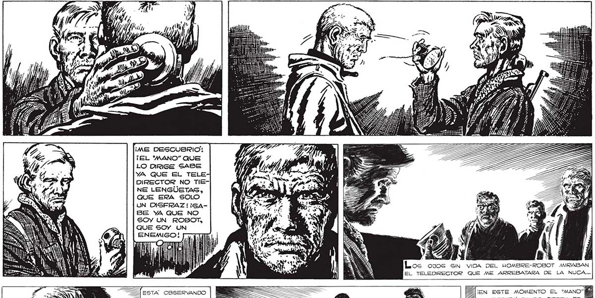

280 ¡ME DESCUBRIO: ¡EL "'MANO” QUE LO DIRIGE SABE YA QUE EL TELE DIRECTOR NO TIENE LENGUETASG, QUE ERA SOLO UN DISFRAZ! i¡5ABE YA QUE NO SOY UN ROBOT, QUE SOY UN ENEMIGO! ROBOT MIRABAN EL TELEDIRECTOR QUE ME ARREBATARA DE LA NUCA... ESTA OBSERVANDO AQUE NO TIENE LEN: CUENTA DE NADA, EL DESDICHADO ME ESTA DELATANDO AL'“MANO” QUE LO DIRIGE ... 2 - Dl Ss. EN AQUEL MOMENTO EL 'MANO” GE ESTABA ENTERANDO YA bh DE QUE NO ERAMOS HOMBRES-ROBOTS, QUE ERAMOS ENEMIGOS. __ e 001! ¡EN ESTE MOMENTO EL LE ESTARA DANDO ORDEN DE MATAR |
